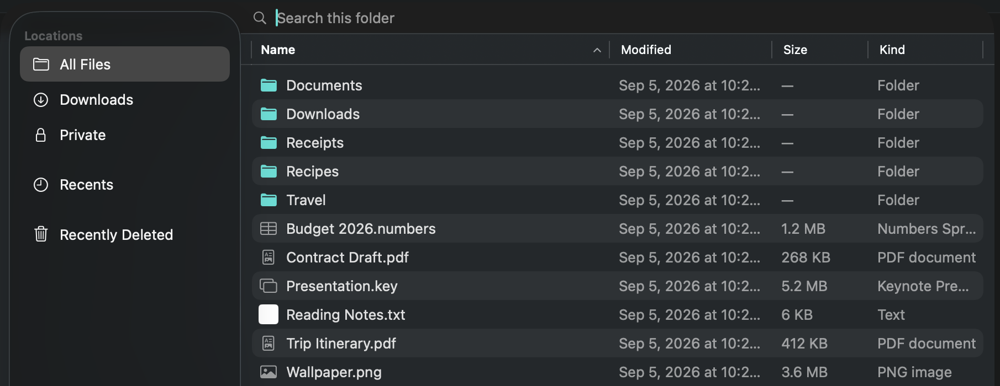
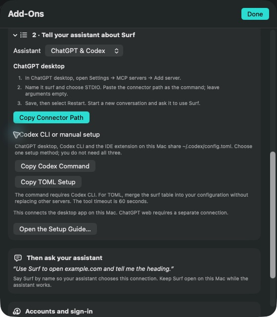

Make room to read.
Open an article in Reader, choose your theme and type size, then save its article archive for offline reading. Free keeps up to five saved articles.
Entries saved only as links still need the web.
For iPhone, iPad & Mac
A browser for everything you want to keep. Private tabs, calmer reading and a proper home for your files, together in one native app.
Free to download. Optional Pro purchases. No Surf account required.
The web.
With a place for your things.

Start with the everyday
Browse for free with the tools you reach for every day.
Open an article in Reader, choose your theme and type size, then save its article archive for offline reading. Free keeps up to five saved articles.
Entries saved only as links still need the web.
Keep documents in folders, add tags and favourites, open ZIP archives, and recover files from Recently Deleted. File-library iCloud storage is included on every plan when available.
Use private tabs, block many webpage ads and known trackers, choose your search engine, and find pages in your bookmarks and history.
Private browsing does not make you anonymous to websites or your network.
Surf Pro
One subscription covers iPhone, iPad and Mac. Keep bookmarks, history and Reading List in step through your own iCloud, and open tabs from your other devices.
Keep your bookmark folders and reading list close, whether you reach for your phone, iPad or Mac.
Save unlimited articles and sign-ins, save more files, and remember each site’s layout and text size.
On Mac, let a compatible local assistant work in background tabs with the free, separately installed Surf Connector.
| Included | Surf Free | Surf Pro |
|---|---|---|
| Tabs, private browsing & webpage blocking | Included | Included |
| File library & iCloud file storage | Included | Included |
| Bookmarks, history & Reading List continuity | On this device | Across your devices |
| Tabs from your other devices | — Not included | Included |
| Saved articles | 5 | Unlimited |
| Remembered sign-ins | 5 | Unlimited |
| Files saved per day | 5, one at a time | Unlimited, several at once |
| Remember text size & desktop mode per site | — Not included | Included |
| Assistant control on Mac | — Not included | With Surf Connector |
Browser continuity needs Pro, iCloud enabled in Surf, and available iCloud storage. Private tabs, cookies and form contents do not sync. Saved sign-ins use optional iCloud Keychain separately.
Surf Pro Monthly
All Pro features across your Apple devices, billed monthly.
Surf Pro Yearly
All Pro features across your Apple devices, billed annually.
Eligible new subscribers can try Pro free for 3 days. Open Settings in Surf and choose Surf Pro to see your local prices and offer terms. Mac also offers a one-time Lifetime purchase.
Purchases are handled by Apple. Subscriptions renew automatically unless cancelled at least 24 hours before the current period ends. Manage or cancel in your Apple Account settings. Introductory offers depend on eligibility. Terms of Use.
Mac + Surf Pro
Connect Codex, Claude or another compatible local MCP assistant. It can open pages, read, click, type and scroll in its own background tabs, or a tab you explicitly hand over.
The Surf Connector is free. Surf Pro and your own compatible assistant software and account are required; assistant provider charges are separate.
See compatibility and setupAssistant tabs share your website sign-ins. Requested page content goes to your assistant’s provider. Private tabs stay excluded, and Automation → Stop Automation stays available in the menu bar. Mac only; local setup does not connect chatgpt.com.

Privacy, plainly explained
Surf has no account to create and no developer analytics SDK. Optional sync uses your own iCloud. Both Free and Pro have no app advertising.
Websites and search engines receive the requests needed to browse. If you connect an assistant on Mac, requested content goes to its provider.
Read the privacy policySupport
Need a hand? Email Surf support with your device, app version and what happened.
Open a new tab and enter a web address or search. Use the star to bookmark a page. Open Reader on a supported article to adjust its appearance or save an offline archive. Use the folder button to open your file library.
Pro adds browser-data continuity through your own iCloud, tabs from other devices, unlimited saved articles and remembered sign-ins, higher file-saving capacity, persistent site settings and assistant access on Mac. One subscription covers iPhone, iPad and Mac. The free browser and file library remain available without a subscription.
Your file library can live in your own iCloud storage on every plan. Bookmarks, history, Reading List and tabs are browser data; Pro keeps that data in step across your devices. You control iCloud sync in Surf’s Settings.
Open Surf’s Settings, then the Surf Pro membership page. Use Restore Purchases with the Apple Account used for the purchase. Use Manage Subscription to review renewal or cancel through Apple. Your membership page shows verified plan details and renewal information when available.
Yes. Save the article from Reader to keep its archived content, then open it from Reading List. An entry saved only as a link still needs a connection. Free keeps five saved articles; Pro removes that limit.
Private tabs keep no browsing history. Their cookies and site data are held in memory and cleared when you close the private session. They are excluded from browser-data sync and assistant access. Private browsing does not hide you from websites, your network or your internet provider.
Both are in Surf’s Settings. Clear Browsing Data removes history, cookies and cache after confirmation and signs you out of websites; bookmarks remain unless you remove them. Choose a search engine from the list or enter your own search URL.
Assistant control is available only in Surf for Mac, with Pro, the separately installed free connector, and compatible local assistant software. See the connection guide for requirements, setup and verification limits.
Surf for iPhone, iPad and Mac.
Download SurfiOS 17+, iPadOS 17+ and macOS 14+.